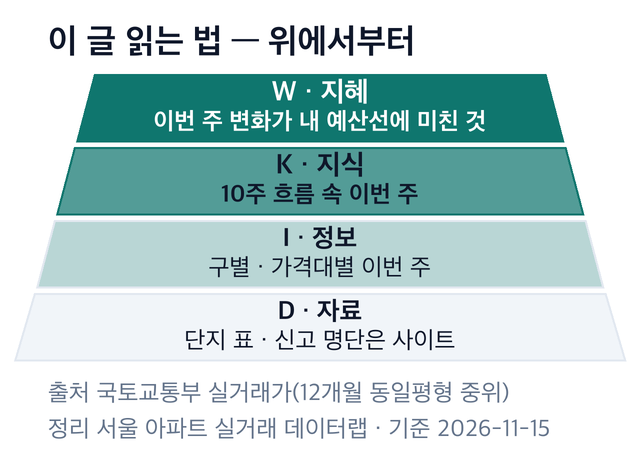
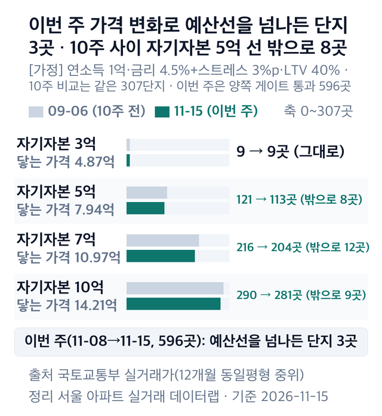
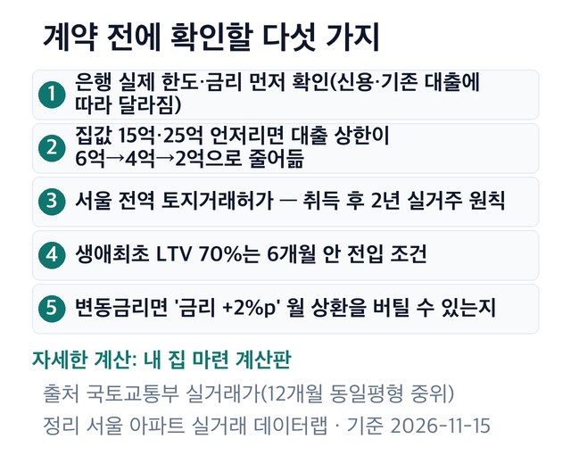
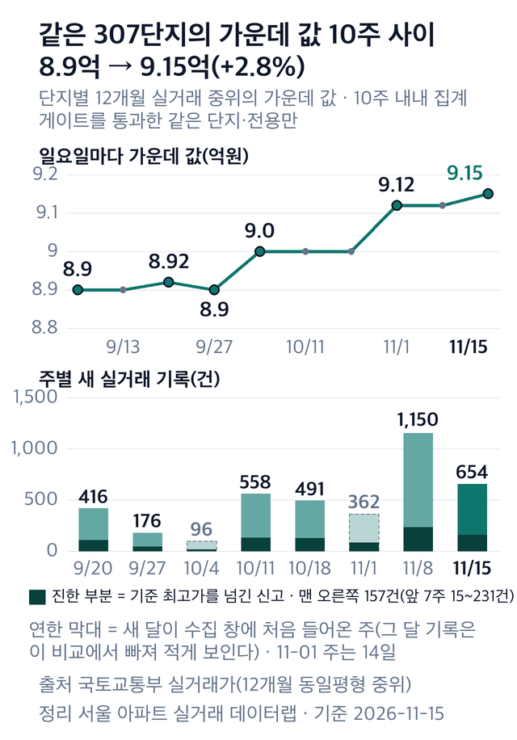
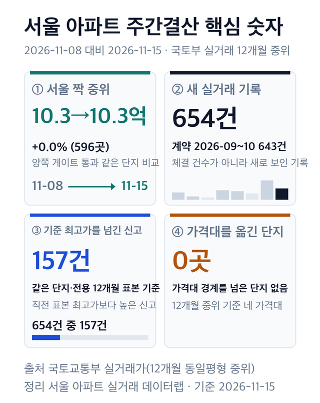
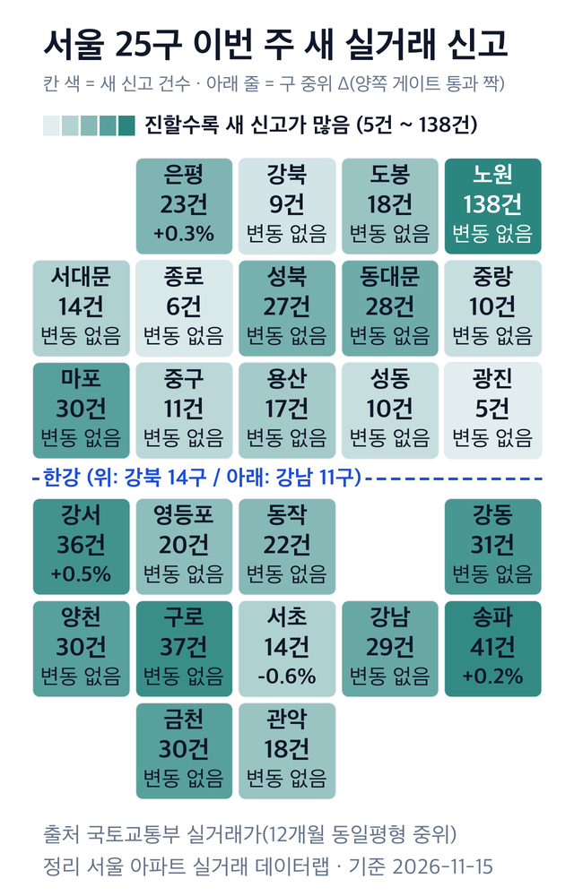
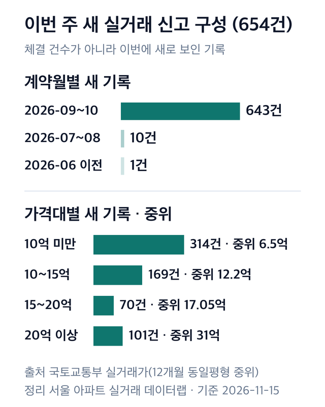

한눈에 보기 — 지난 7일 동안 두 번 다 집계된 같은 서울 아파트 596곳의 가격 가운데 값은 10.3억 그대로였습니다. 단지마다 최근 12개월 실거래의 가운데 값을 견준 것이라 이 기간 거래만의 변화는 아닙니다. 가격대를 옮긴 단지는 0곳입니다.
기준 스냅샷 2026-11-08(실거래 기준일 2026-11-08) → 이번 2026-11-15(기준일 2026-11-15), 7일. 발행 1742 → 1743단지, 같은 단지로 짝지은 1727단지 기준(중위 비교는 그중 양쪽 집계 게이트 통과 596단지). 국토부 실거래 12개월 동일평형 중위의 변화(사실), 자체 점수·순위 없음.
이번에 새로 포함 1: 현대하이페리온(주상복합)(양천) · 기준에만 있던 단지 0: 없음 · 대표면적 변경 15(같은 면적 짝이 없어 가격 비교 제외): DMC파인시티자이(은평) 60→85㎡, e편한세상수색에코포레(은평) 85→60㎡, 대림(용산) 85→59㎡, 대주파크빌(은평) 85→60㎡, 동아하이빌(강동) 60→85㎡, 라르파크(도시형)(영등포) 30.5→30㎡, 래미안라그란데(동대문) 100→60㎡, 레이크팰리스(송파) 85→60㎡, 로데오현대(강남) 55→91㎡, 보라매삼성쉐르빌(주상복합)(동작) 120.5→164㎡ 외 5
발행 풀이 바뀌어 아래 중위 비교는 짝지은 1727단지 중 양쪽 집계 게이트 통과 596단지만으로 계산. 이번 풀 전체 중위 10.38억(1743단지)는 구성이 달라 기준과 비교하지 않음.
서울 중위(양쪽 게이트 통과 짝 596단지 중위의 중위) 10.3억 → 10.3억 (+0.0%)
| 가격대 | 단지 수(기준→이번) | 밴드 중위(억, 시점별 소속 짝 n) | 단지별 Δ중위 | 밴드 이동 |
|---|---|---|---|---|
| 10억 미만 | 796 → 796 | 7억(n287) → 7억(n287) | +0.0% (IQR 0%p, n287) | 유입 0 · 유출 0 |
| 10~15억 | 363 → 363 | 12.5억(n171) → 12.5억(n171) | +0.0% (IQR 0%p, n171) | 유입 0 · 유출 0 |
| 15~20억 | 199 → 203 | 17억(n83) → 17억(n83) | +0.0% (IQR 0%p, n83) | 유입 0 · 유출 0 |
| 20억 이상 | 237 → 236 | 26억(n55) → 26억(n55) | +0.0% (IQR 0%p, n55) | 유입 0 · 유출 0 |
밴드 중위 = 각 시점에 그 가격대에 속한 양쪽 게이트 통과 짝 단지의 분포(밴드 이동으로 구성이 달라짐). 단지별 Δ중위와 가격대 이동도 양쪽 집계 게이트를 통과한 짝만 계산.
가격대가 바뀐 단지 없음
| 구 | 단지 수 | 구 중위(억, 짝 기준→이번) | Δ | 단지별 Δ중위 | 52주 상단(기준→이번) | 52주 하단(기준→이번) | 신고 |
|---|---|---|---|---|---|---|---|
| 강남 | 98 → 98 | 26.35억 → 26.35억 | +0.0% n12 | +0.0% n12 | 0 → 0 | 0 → 0 | 29건 |
| 강동 | 84 → 84 | 14.97억 → 14.97억 | +0.0% n27 | +0.0% n27 | 1 → 1 | 0 → 0 | 31건 |
| 강북 | 31 → 31 | 7.2억 → 7.2억 | +0.0% n17 | +0.0% n17 | 0 → 0 | 0 → 0 | 9건 |
| 강서 | 107 → 107 | 10.5억 → 10.55억 | +0.5% n43 | +0.0% n43 | 0 → 0 | 0 → 0 | 36건 |
| 관악 | 47 → 47 | 9.8억 → 9.8억 | +0.0% n15 | +0.0% n15 | 0 → 0 | 0 → 0 | 18건 |
| 광진 | 45 → 45 | 16.93억 → 16.93억 | +0.0% n6 | +0.0% n6 | 1 → 1 | 0 → 0 | 5건 |
| 구로 | 108 → 108 | 6.92억 → 6.92억 | +0.0% n39 | +0.0% n39 | 3 → 3 | 0 → 0 | 37건 |
| 금천 | 27 → 27 | 6.69억 → 6.69억 | +0.0% n7 | +0.0% n7 | 0 → 0 | 0 → 0 | 30건 |
| 노원 | 110 → 110 | 6.5억 → 6.5억 | +0.0% n57 | +0.0% n57 | 1 → 1 | 0 → 0 | 138건 |
| 도봉 | 60 → 60 | 5.83억 → 5.83억 | +0.0% n25 | +0.0% n25 | 0 → 0 | 0 → 0 | 18건 |
| 동대문 | 87 → 87 | 10.79억 → 10.79억 | +0.0% n34 | +0.0% n34 | 0 → 0 | 0 → 0 | 28건 |
| 동작 | 80 → 80 | 14.97억 → 14.97억 | +0.0% n26 | +0.0% n26 | 2 → 2 | 0 → 0 | 22건 |
| 마포 | 82 → 82 | 14.9억 → 14.9억 | +0.0% n17 | +0.0% n17 | 0 → 0 | 0 → 0 | 30건 |
| 서대문 | 56 → 56 | 11.46억 → 11.46억 | +0.0% n32 | +0.0% n32 | 1 → 1 | 0 → 0 | 14건 |
| 서초 | 102 → 102 | 34억 → 33.8억 | -0.6% n19 | +0.0% n19 | 0 → 0 | 1 → 0 | 14건 |
| 성동 | 56 → 56 | 16.45억 → 16.45억 | +0.0% n17 | +0.0% n17 | 0 → 0 | 0 → 0 | 10건 |
| 성북 | 72 → 72 | 9.05억 → 9.05억 | +0.0% n39 | +0.0% n39 | 3 → 3 | 0 → 0 | 27건 |
| 송파 | 86 → 86 | 17.53억 → 17.57억 | +0.2% n34 | +0.0% n34 | 2 → 2 | 0 → 0 | 41건 |
| 양천 | 64 → 65 | 9억 → 9억 | +0.0% n17 | +0.0% n17 | 0 → 0 | 0 → 0 | 30건 |
| 영등포 | 110 → 110 | 13.6억 → 13.6억 | +0.0% n33 | +0.0% n33 | 1 → 1 | 0 → 0 | 20건 |
| 용산 | 39 → 39 | 15.04억 → 15.04억 | +0.0% n7 | +0.0% n7 | 0 → 0 | 0 → 0 | 17건 |
| 은평 | 76 → 76 | 8.66억 → 8.69억 | +0.3% n38 | +0.0% n38 | 0 → 0 | 0 → 0 | 23건 |
| 종로 | 23 → 23 | 9억 → 9억 | +0.0% n3 | — n3 | 0 → 0 | 0 → 0 | 6건 |
| 중구 | 30 → 30 | 16.3억 → 16.3억 | +0.0% n6 | +0.0% n6 | 0 → 0 | 0 → 0 | 11건 |
| 중랑 | 62 → 62 | 7.18억 → 7.18억 | +0.0% n26 | +0.0% n26 | 0 → 0 | 0 → 0 | 10건 |
기준 아카이브 대비 새로 나타난 실거래 기록 654건(계약월 2026-09~10 643건 · 2026-07~08 10건 · 2026-06 이전 1건 — 늦은 신고·정정이 섞였을 수 있으나 사유 미확인) · 현재 목록에서 사라진 건 37건(12개월 창 이탈 0건 · 창 안에서 사라짐 37건 — 해제·정정 등 사유 미확인 · 사라진 기록 중 새 기록과 계약일만 다른 것 1건(정정일 수 있음)). 신고 확인 시점 기준이며 그 주 체결 건수가 아님(법정 신고기한은 계약 후 30일이며, 공개·정정·해제 반영으로 최근 계약 자료는 잠정).
| 가격대(신고가) | 건수 | 중위(억) |
|---|---|---|
| 10억 미만 | 314 | 6.5억 |
| 10~15억 | 169 | 12.2억 |
| 15~20억 | 70 | 17.05억 |
| 20억 이상 | 101 | 31억 |
같은 단지·전용의 기준 12개월 표본 최고가를 넘긴 신고 157건(구·단지명 순 15건 표시)
| 단지(구) 전용 | 신고가(억) | 기준 최고(억) n |
|---|---|---|
| 현대8차(성수현대:91~95동)(강남) 163.67㎡ | 71.5억 | 70억 n5 |
| 고덕롯데캐슬베네루체(강동) 59.98㎡ | 17.18억 | 16.4억 n13 |
| 동아하이빌아파트(강동) 84.97㎡ | 11억 | 10.8억 n7 |
| 동아하이빌아파트(강동) 84.97㎡ | 11.75억 | 10.8억 n7 |
| 래미안힐스테이트고덕(강동) 84.83㎡ | 23.2억 | 22.7억 n36 |
| 롯데캐슬퍼스트(강동) 112.11㎡ | 21.5억 | 20.88억 n8 |
| 삼성광나루(강동) 114.87㎡ | 18.37억 | 17.8억 n4 |
| 삼익가든(강동) 66.87㎡ | 15.8억 | 15.6억 n9 |
| 삼익아파트(강동) 59.8㎡ | 9억 | 8.4억 n4 |
| 한양(강동) 84.92㎡ | 20.7억 | 20억 n4 |
| 두산위브트레지움(강북) 84.97㎡ | 11.3억 | 10.97억 n52 |
| 벽산라이브파크(강북) 114.68㎡ | 8.1억 | 7.95억 n21 |
| 삼성래미안트리베라2단지(강북) 84.15㎡ | 12.47억 | 12.15억 n31 |
| 수유역두산위브2(강북) 84.99㎡ | 8.6억 | 8.45억 n3 |
| 가양6단지(강서) 58.65㎡ | 12.9억 | 12.8억 n23 |
방법론: 12개월 동일평형(±3.5㎡) 실거래 중위는 이동 창이라 주간결산 변화가 대부분 작다 — 변화의 대부분은 창에 들어오고 나가는 신고다. 단지별 Δ = (이번 중위 − 기준 중위) ÷ 기준 중위, 짝지은 단지 5곳 미만인 셀은 "—". 52주 상단/하단 = 최근 3개월 중위가 12개월 레인지의 99% 이상 / 6% 이하(아파트·전용 40㎡ 이상·표본 10건 이상만). 가격대 = 12개월 중위 기준 반개구간(10억 미만 / 10~15억 / 15~20억 / 20억 이상). 국토부 RTMS 공공데이터, 민간 시세는 사용·게재하지 않음. 본 자료는 개인 연구·정보 공유이며 투자자문·매수권유가 아닙니다. 수치는 국토교통부 공공 실거래가 기준이며 게시 시점 스냅샷입니다. 거래 전 반드시 국토부 실거래가·현장에서 재확인하십시오. 사실 오류·이의제기 접수 시 확인 후 수정·삭제합니다. 연락처: hexisteme@gmail.com